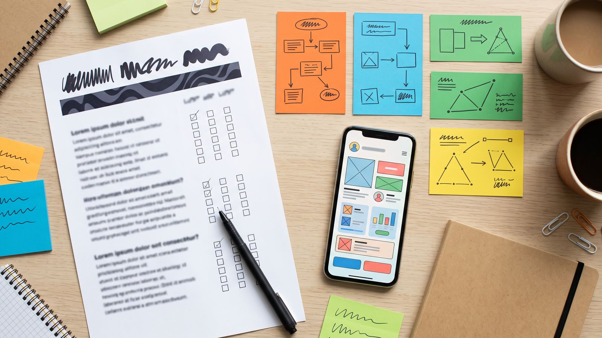
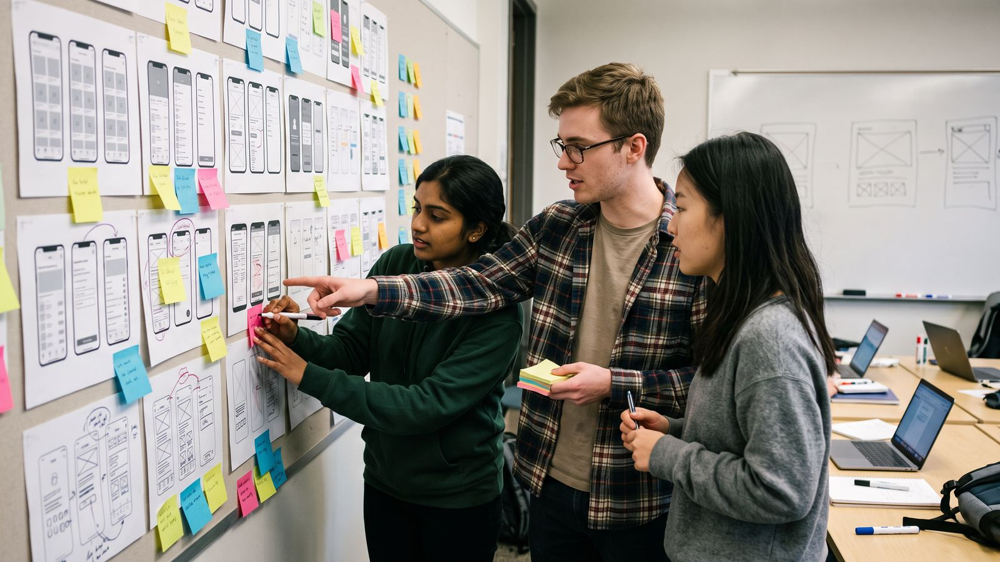
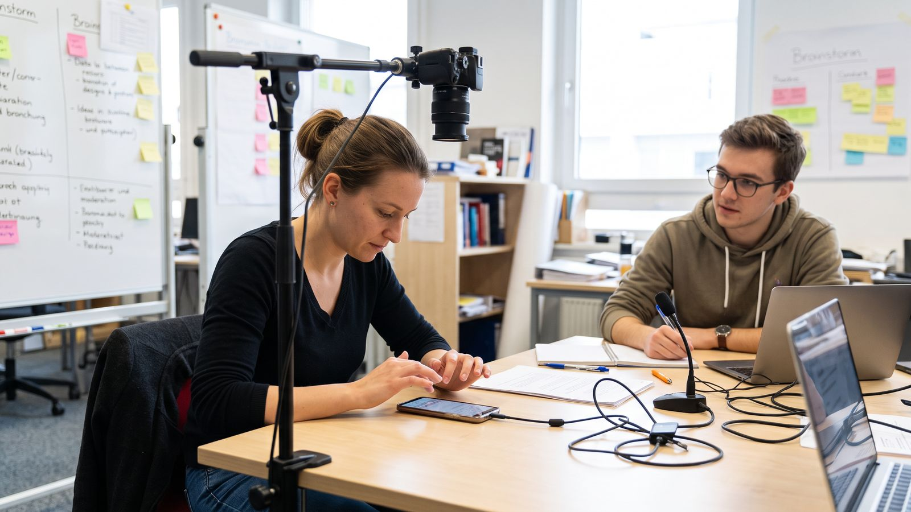
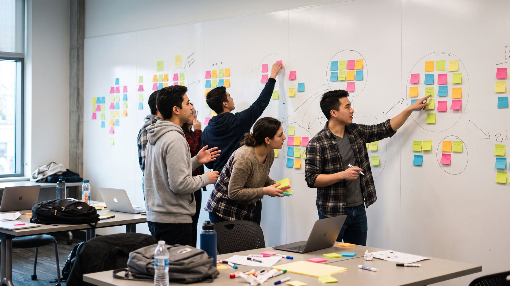
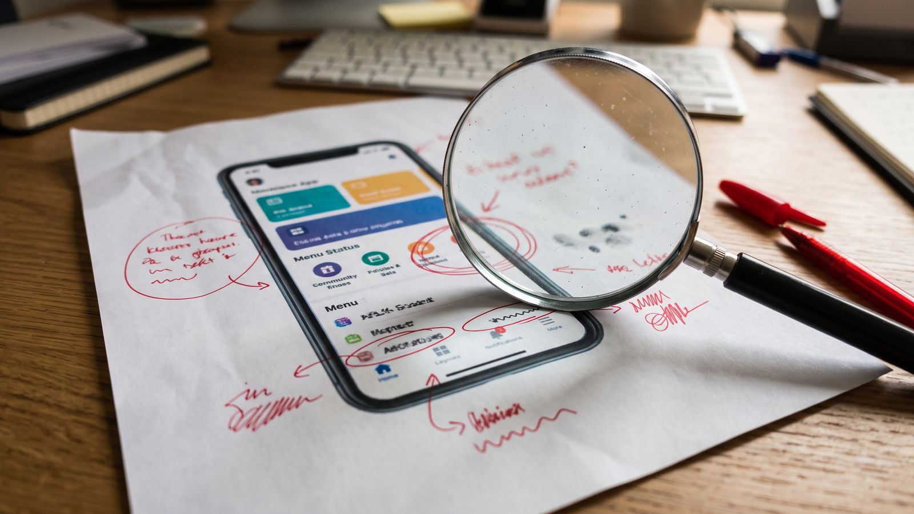
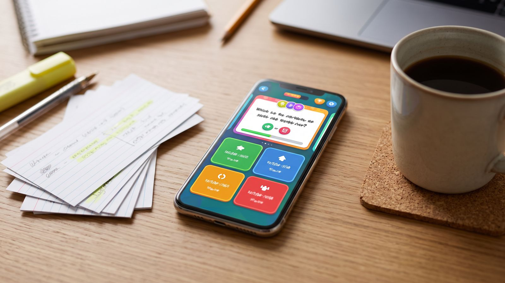

Lernmodul 06 · Medienprojekt 1 · 3. Semester Medieninformatik
UX & Evaluation mobiler Apps
Im Medienprojekt entwickeln Sie eine eigene App. Dieses Modul zeigt, wie Sie sie von Anfang an für echte Menschen gestalten und mit ihnen überprüfen: Nutzende verstehen, mobil denken, barrierefrei bauen, Heuristiken anwenden, Usability-Tests durchführen, Ergebnisse messen und so berichten, dass Ihr Team daraus etwas macht. Mit sechs interaktiven Übungen bis zum fertigen Testplan für Ihr Projekt.
Gestalten & Evaluieren
Kapitel 01–10Übungen
Platzieren · Prüfen · Testen · MessenWissen
Test · Literatur · RegisterUX im Medienprojekt
Eine App kann technisch einwandfrei sein und trotzdem scheitern: weil niemand die wichtigste Funktion findet, weil der Button unter der Tastatur verschwindet oder weil sie ein Problem löst, das niemand hat. User Experience (UX) und Evaluation sorgen dafür, dass Ihr Team das rechtzeitig merkt.
Usability und User Experience
Usability
Die Gebrauchstauglichkeit nach DIN EN ISO 9241-11: Wie effektiv, effizient und zufriedenstellend können bestimmte Nutzende in einem bestimmten Kontext ihre Ziele erreichen? Usability lässt sich beobachten und messen.
User Experience
Alle Wahrnehmungen und Reaktionen vor, während und nach der Nutzung (ISO 9241-210): Erwartungen, Vertrauen, Freude, Ärger. Usability ist ein Teil davon, aber eine App kann gut bedienbar sein und sich trotzdem langweilig anfühlen.
Zum Nachlesen: Die Grundbegriffe, die zehn Heuristiken, die ISO-Normen und die Gestaltgesetze sind im Lernmodul 05 · UX-Grundlagen ausführlich erklärt. Dieses Modul baut darauf auf und wendet sie auf Ihre App im Medienprojekt an. Wie Sie Übergänge, Rückmeldungen und Mikrointeraktionen Ihrer App gestalten, zeigt das Lernmodul 07 · UX & Animation.
Warum evaluieren, wenn man doch selbst testet?
Wer eine App entwickelt, kennt jeden Bildschirm. Genau das macht blind: Sie wissen, wo der Button ist, weil Sie ihn selbst dorthin gesetzt haben. Nutzende kommen ohne dieses Wissen. Drei typische Fallen:
„Ich bin nicht die Nutzerin“
Das Team ist technikaffin, kennt die Fachbegriffe und hat die App hundertmal gesehen. Es ist die schlechteste Testgruppe für die eigene App.
Zu spät testen
Ein Strukturfehler, der im Papierprototyp fünf Minuten kostet, kostet nach der Implementierung Tage.
Meinung statt Verhalten
„Gefällt euch das?“ liefert Höflichkeit. Erst wenn Menschen eine Aufgabe lösen, sieht man, wo sie scheitern.
Lernziele
Nach Bearbeitung des Moduls können Sie …
- den menschzentrierten Gestaltungsprozess auf Ihr Medienprojekt übertragen,
- Nutzende und ihren mobilen Nutzungskontext mit Interviews und Personas beschreiben,
- Bedienelemente für Daumen, Gesten und Plattformkonventionen gestalten,
- Ihre App gegen die wichtigsten Anforderungen der Barrierefreiheit prüfen,
- passende Evaluationsmethoden für jede Projektphase auswählen,
- eine heuristische Evaluation im Team durchführen,
- einen Usability-Test planen, moderieren und aufzeichnen,
- Ergebnisse mit Erfolgsquoten, SUS und UEQ messen,
- Befunde nach Schweregrad priorisieren und in einem Bericht dokumentieren.
So arbeiten Sie mit dem Modul
Kapitel 01–05 helfen beim Gestalten, Kapitel 06–10 beim Überprüfen. Sie folgen dem Ablauf Ihres Projekts.
Sechs Übungen vom Daumenzonen-Check bis zum Testplan. Jede endet mit „Als erledigt markieren“.
Der Testplan aus Übung 6 ist direkt für Ihr Projekt gedacht. Laden Sie ihn herunter und nutzen Sie ihn im Team.
Nutzerzentrierter Prozess
Gute Apps entstehen nicht in einem Wurf. Sie entstehen in Schleifen: verstehen, entwerfen, ausprobieren lassen, verbessern. Die Norm DIN EN ISO 9241-210 beschreibt diesen Ablauf, und er passt gut zu den Sprints in Ihrem Medienprojekt.
Die vier Aktivitäten nach ISO 9241-210
- 01
Nutzungskontext verstehen
Wer nutzt die App, wofür, wo und mit welchem Gerät? Unterwegs in der Bahn, im Hörsaal, in der Küche mit nassen Händen?
- 02
Anforderungen festlegen
Aus dem Kontext folgen Ziele und Anforderungen: „Eine Person mit wenig Zeit soll in unter 30 Sekunden sehen, was es heute in der Mensa gibt.“
- 03
Lösungen gestalten
Skizzen, Wireframes, klickbare Prototypen. Früh grob, später fein.
- 04
Gegen die Anforderungen evaluieren
Mit Fachleuten und mit Nutzenden prüfen. Die Ergebnisse führen zurück zu Schritt 1, 2 oder 3.
Entscheidend ist der Pfeil zurück: Evaluation ist kein Abschluss, sondern der Motor des Prozesses. Die Norm verlangt außerdem, dass Nutzende über den ganzen Prozess einbezogen werden und dass das Team interdisziplinär arbeitet. Genau das ist in einem Medienprojekt mit Gestaltung, Entwicklung und Konzeption der Fall.
Prozess im Medienprojekt
| Projektphase | Was Sie tun | Evaluation |
|---|---|---|
| Wochen 1–3 Idee | Problem und Zielgruppe klären, Interviews, Personas | Annahmen prüfen: Gibt es das Problem wirklich? |
| Wochen 4–6 Konzept | Flussdiagramm, Wireframes, klickbarer Wireframe-Prototyp des zentralen Nutzungswegs | Papierprototyp-Test, Cognitive Walkthrough, Peer-Test der Wireframes (Aufgabe 02) |
| Wochen 7–10 Prototyp | Klickbarer Prototyp in Figma, erste Umsetzung | Heuristische Evaluation, Usability-Test mit 5 Personen |
| Wochen 11–14 Umsetzung | App entwickeln, Befunde einarbeiten | Zweiter Test, SUS oder UEQ, Barrierefreiheits-Check |
| Abgabe | Präsentation und Dokumentation | Evaluationskapitel im Bericht |
Die Wochen sind ein Vorschlag. Maßgeblich ist der Zeitplan Ihres Projekts.
Fidelity: Wie fertig muss ein Prototyp sein?
Low-Fidelity
Papier, Skizzen, graue Kästen. In Minuten geändert. Ideal, um Struktur und Abläufe zu testen, weil niemand über Farben diskutiert.
Mid-Fidelity
Klickbare Wireframes mit echten Texten. Gut für Navigation und Begriffe. So testen Sie sie gegenseitig: Peer-Test in Kapitel 08.
High-Fidelity
Fast wie die echte App, mit Design und Animationen. Für Detailfragen, Vertrauen und Wirkung.
Faustregel: Testen Sie so früh wie möglich mit der niedrigsten Fidelity, die Ihre Frage beantwortet. Wer wissen will, ob die Navigation verstanden wird, braucht keine fertigen Icons.
Nutzende verstehen
Bevor Sie einen Screen gestalten, sollten Sie wissen, für wen. Nicht „alle Studierenden“, sondern Menschen mit konkreten Zielen, Gewohnheiten und Situationen. Bei Apps kommt der Kontext dazu: unterwegs, abgelenkt, mit einer Hand.
Methoden, um Nutzende kennenzulernen
Leitfadeninterview
5–8 Gespräche à 20–40 Minuten mit Menschen aus der Zielgruppe. Offene Fragen nach Erfahrungen: „Erzählen Sie, wie Sie zuletzt …“. Nicht fragen, ob jemand eine App wollen würde.
Kontextbeobachtung
Dort hinschauen, wo die App später genutzt wird: an der Haltestelle, in der Mensa-Schlange, im Fitnessstudio. Was Menschen tun, verrät mehr als das, was sie sagen.
Kurze Umfrage
Ergänzt Interviews um Zahlen: Wie viele nutzen das Angebot wie oft? Gut, um Annahmen aus den Gesprächen zu prüfen, nicht um sie zu ersetzen.
Wettbewerbsanalyse
Wie lösen bestehende Apps das Problem? Was loben und kritisieren Rezensionen im App Store? Dort finden Sie Pain Points kostenlos.
Gute Interviewfragen
| Statt … | besser … | warum |
|---|---|---|
| „Würden Sie eine App nutzen, die …?“ | „Wie haben Sie das zuletzt gelöst?“ | Menschen sagen aus Höflichkeit Ja. Vergangenes Verhalten ist verlässlicher. |
| „Finden Sie die Mensa-Website umständlich?“ | „Wie finden Sie heraus, was es heute gibt?“ | Suggestivfragen geben die Antwort vor. |
| „Nutzen Sie Push-Nachrichten?“ | „Welche Benachrichtigungen haben Sie zuletzt sofort geöffnet, welche weggewischt?“ | Konkrete Erinnerungen statt Ja/Nein. |
Von Daten zu Personas
Aus den Interviews entstehen Personas: verdichtete Modelle typischer Nutzungsgruppen mit Zielen, Frustrationen, Verhalten und Kontext. Für ein Medienprojekt reichen meist eine primäre und eine sekundäre Persona. Wichtig ist, dass jede Aussage auf Ihre Daten zurückgeht. Eine Persona, die am Schreibtisch erfunden wurde, bestätigt nur die Annahmen des Teams.
Lena, 20, Erstsemester Maschinenbau. Isst viermal pro Woche in der Mensa, hat 25 Minuten Pause zwischen zwei Vorlesungen. Ziel: schnell etwas Vegetarisches ohne lange Schlange. Frust: Das Angebot steht nur als PDF online. Kontext: Smartphone in der Hand auf dem Weg vom Hörsaal.
Dienstag, 11:50 Uhr. Lena verlässt die Vorlesung und will vor 12:15 Uhr gegessen haben. Sie öffnet die App im Gehen, sieht die beiden vegetarischen Gerichte und die geschätzte Wartezeit, bestellt vor und holt das Essen an der Ausgabe ab.
Das Szenario ist gleichzeitig die Vorlage für eine Testaufgabe in Kapitel 08. Mehr zu Personas und Journey Maps finden Sie im Lernmodul UX-Grundlagen unter „Design Methoden“.
Der mobile Nutzungskontext
Unterbrechung
Mobile Nutzung passiert in kurzen Episoden. Eine Aufgabe muss nach einer Unterbrechung leicht wieder aufzunehmen sein.
Umgebung
Sonnenlicht, Lärm, schwaches Netz, Handschuhe. Testen Sie nicht nur am Schreibtisch.
Aufmerksamkeit
Wer gleichzeitig läuft, wartet oder spricht, hat wenig Aufmerksamkeit übrig. Weniger ist mehr.
Mobile UX
Ein Smartphone ist kein kleiner Desktop. Es wird mit dem Daumen bedient, oft mit einer Hand, und es folgt den Konventionen seiner Plattform. Wer diese Regeln kennt, vermeidet die häufigsten Probleme, bevor jemand testet.
Daumenzonen
Steven Hoober beobachtete 2013 über 1.300 Menschen bei der Smartphone-Nutzung: Rund die Hälfte bediente das Gerät einhändig. Der Daumen erreicht dabei den unteren und mittleren Bereich gut, die oberen Ecken schlecht. Bei großen Displays wird dieser Effekt stärker.
Leicht
Unten, besonders unten Mitte. Hier gehören Tab-Leiste, Hauptaktion und häufige Funktionen hin.
Mittel
Mitte und Seiten. Gut für Inhalte, Listen und seltener genutzte Aktionen.
Schwer
Obere Ecken. Geeignet für seltene Aktionen wie Einstellungen und für destruktive Aktionen, die nicht versehentlich ausgelöst werden sollen.
Touch-Ziele
| Quelle | Mindestgröße | Hinweis |
|---|---|---|
| Apple Human Interface Guidelines | 44 × 44 pt | Gilt für alle antippbaren Elemente. |
| Google Material Design | 48 × 48 dp | Mit mindestens 8 dp Abstand zwischen Zielen. |
| WCAG 2.2 Kriterium 2.5.8 (AA) | 24 × 24 CSS-px | Rechtliche Untergrenze. 2.5.5 (AAA) verlangt 44 × 44. |
Die sichtbare Fläche darf kleiner sein als die antippbare: Ein 24 px großes Icon kann eine 44 pt große Trefferfläche haben.
Plattformkonventionen
iOS
Tab-Leiste unten für 3–5 Hauptbereiche, Zurück-Geste vom linken Rand, Titel oben, Bestätigungen als Action Sheet von unten. SF-Symbols als Icon-Sprache.
Android
Navigationsleiste unten (Material 3), System-Zurück-Geste an beiden Rändern, Floating Action Button für die Hauptaktion, Snackbars für kurze Rückmeldungen.
Nutzende verbringen die meiste Zeit in anderen Apps und übertragen ihre Erwartungen (Jakob’s Law). Eine eigene, ungewöhnliche Navigation muss sich diesen Lernaufwand verdienen.
Gesten, Tastatur, Rückmeldung
Gesten sichtbar machen
Wischen zum Löschen ist praktisch, aber unsichtbar. Bieten Sie immer auch einen sichtbaren Weg an.
Passende Tastatur
Zahlenfeld für PLZ und Kartennummer, E-Mail-Tastatur mit @. Auf dem Web per inputmode, nativ per Keyboard-Type.
Sofortige Rückmeldung
Jede Berührung braucht eine Reaktion: Zustand, Ladeindikator, Haptik. Sonst tippen Menschen mehrfach.
Ausprobieren: In Übung 1 platzieren Sie Bedienelemente auf einem Smartphone und prüfen, ob sie in der richtigen Daumenzone liegen und groß genug sind.
Barrierefreie Apps
Rund jede zehnte Person in Deutschland lebt mit einer anerkannten Schwerbehinderung, viele weitere mit Sehschwäche, Zittern oder vorübergehenden Einschränkungen, etwa einem gebrochenen Arm. Barrierefreiheit macht Apps für alle besser und ist seit 2025 für viele Angebote Pflicht.
Rechtlicher Rahmen
BFSG
Das Barrierefreiheitsstärkungsgesetz gilt seit 28. Juni 2025. Es setzt den European Accessibility Act um und betrifft u. a. Online-Shops, Banking, Ticketing und Personenbeförderung, auch als App.
WCAG 2.2
Die Web Content Accessibility Guidelines sind der fachliche Maßstab. Die europäische Norm EN 301 549 verweist auf sie und wendet sie auch auf native Apps an. Ziel ist Stufe AA.
Die wichtigsten Prüfpunkte für Ihre App
| Prüfpunkt | Anforderung | So prüfen Sie |
|---|---|---|
| Kontrast | Text mind. 4,5 : 1, große Schrift und Bedienelemente mind. 3 : 1 | Kontrast-Checker, z. B. in Figma |
| Schriftgröße | Layout hält Systemeinstellung „größere Schrift“ aus | Dynamic Type (iOS) bzw. Schriftgröße (Android) auf Maximum |
| Screenreader | Jedes Element hat eine sinnvolle Beschriftung und Rolle | VoiceOver bzw. TalkBack einschalten und App blind bedienen |
| Touch-Ziele | mind. 24 × 24 px, besser 44 pt | Abstände im Design messen |
| Nicht nur Farbe | Fehler und Zustände auch mit Text oder Symbol | Screenshot in Graustufen ansehen |
| Bewegung | Animationen reduzierbar, kein Zwang zu Gesten | Einstellung „Bewegung reduzieren“ testen |
Screenreader in fünf Minuten ausprobieren
- Schalten Sie VoiceOver (iOS: Einstellungen → Bedienungshilfen) oder TalkBack (Android: Einstellungen → Bedienungshilfen) ein.
- Wischen Sie nach rechts, um von Element zu Element zu springen. Doppeltippen aktiviert.
- Öffnen Sie Ihre App und versuchen Sie, die Hauptaufgabe zu erledigen, ohne hinzusehen.
- Notieren Sie jedes Element, das als „Button“ ohne Namen oder als Dateiname vorgelesen wird.
Vertiefung: Kontraste und Farbsehschwächen behandelt das Lernmodul Farbgestaltung, rechtliche Grundlagen und Alternativtexte die Typografie-Lektion 09.
Evaluationsmethoden
Es gibt nicht die eine richtige Methode. Welche passt, hängt davon ab, was Sie wissen wollen, wie weit Ihre App ist und wie viel Zeit Sie haben. Diese Übersicht hilft bei der Wahl.

Drei Unterscheidungen
Formativ oder summativ
Formativ heißt: während der Entwicklung, um zu verbessern. Summativ heißt: am Ende, um zu bewerten. Im Medienprojekt evaluieren Sie überwiegend formativ.
Qualitativ oder quantitativ
Qualitativ fragt nach dem Warum: Beobachtungen, Zitate. Quantitativ misst: Erfolgsquoten, Zeiten, Fragebogenwerte.
Mit oder ohne Nutzende
Expertenbasiert prüfen Fachleute, schnell und günstig. Nutzerbasiert zeigen echte Menschen, was wirklich passiert.
Methoden im Überblick
| Methode | Art | Wann | Aufwand |
|---|---|---|---|
| Heuristische Evaluation | expertenbasiert, qualitativ | ab Wireframe | 2–4 Stunden im Team |
| Cognitive Walkthrough | expertenbasiert, qualitativ | ab Papierprototyp | 1–2 Stunden |
| Usability-Test mit lautem Denken | nutzerbasiert, qualitativ | ab Papierprototyp | 5 × 30 Minuten plus Auswertung |
| Fragebogen (SUS, UEQ) | nutzerbasiert, quantitativ | nach jedem Test | 5 Minuten pro Person |
| A/B-Test | nutzerbasiert, quantitativ | veröffentlichte App | viele Nutzende nötig |
| Analytics | nutzerbasiert, quantitativ | veröffentlichte App | Einrichtung, Datenschutz beachten |
Methodenfinder
Kombinieren lohnt sich: Eine heuristische Evaluation vor dem Usability-Test räumt die offensichtlichen Fehler aus dem Weg. Dann verbringen Ihre Testpersonen ihre Zeit mit den interessanten Problemen.
Heuristische Evaluation
Bei einer heuristischen Evaluation prüfen Fachleute eine Oberfläche anhand bewährter Regeln. Sie ist schnell, braucht keine Testpersonen und findet viele offensichtliche Fehler. Sie ersetzt aber keinen Test mit echten Nutzenden.

Die zehn Heuristiken nach Nielsen, mobil gedacht
| Heuristik | Typischer Fehler in Apps |
|---|---|
| 1 Sichtbarkeit des Systemstatus | Nach dem Tippen passiert nichts Sichtbares, kein Ladeindikator. |
| 2 Übereinstimmung mit der realen Welt | Fachbegriffe aus der Entwicklung: „Sync failed“, „Entity“. |
| 3 Nutzerkontrolle und Freiheit | Kein Zurück, kein Rückgängig nach dem Löschen. |
| 4 Konsistenz und Standards | Eigene Navigation, die iOS- oder Android-Konventionen ignoriert. |
| 5 Fehlervermeidung | Falsche Tastatur für Zahlen, destruktive Aktion ohne Rückfrage. |
| 6 Wiedererkennen statt Erinnern | Code aus einer SMS muss abgetippt werden. |
| 7 Flexibilität und Effizienz | Keine Favoriten, kein Autofill, jedes Mal alles neu eingeben. |
| 8 Ästhetisches, minimalistisches Design | Überladener Startscreen mit zehn gleich lauten Elementen. |
| 9 Fehler erkennen und beheben | „Error 500“ statt einer verständlichen Lösung. |
| 10 Hilfe und Dokumentation | Komplexe Funktion ohne Erklärung im Moment der Nutzung. |
Ablauf im Projektteam
- 01
Vorbereiten
Screens oder Prototyp, Persona und 2–3 typische Aufgaben festlegen. Ein gemeinsames Protokoll anlegen.
- 02
Unabhängig prüfen
3–5 Personen gehen die Aufgaben einzeln durch, idealerweise zweimal: einmal für den Fluss, einmal für Details. Jeder Fund wird mit Screen, Heuristik und Beschreibung notiert.
- 03
Zusammenführen
Doppelte Befunde zusammenlegen. Jede Person vergibt einen Schweregrad von 0 bis 4, dann wird gemittelt.
- 04
Maßnahmen ableiten
Für die Befunde mit Schweregrad 3 und 4 konkrete Lösungen formulieren und Verantwortliche festlegen.
Warum einzeln? Eine Person allein findet nach Nielsen nur etwa ein Drittel der Probleme. Mehrere Prüfende ergänzen sich, solange sie sich nicht vorher absprechen.
Cognitive Walkthrough
Eine verwandte Methode für neue Nutzende: Das Team geht eine Aufgabe Schritt für Schritt aus Sicht der Persona durch und stellt bei jedem Schritt vier Fragen:
- Will die Person an dieser Stelle das Richtige tun?
- Bemerkt sie, dass die richtige Aktion verfügbar ist?
- Erkennt sie, dass diese Aktion zu ihrem Ziel führt?
- Sieht sie nach der Aktion, dass sie vorankommt?
Ausprobieren: In Übung 2 finden Sie sechs Probleme in einem Bezahl-Screen und ordnen sie den Heuristiken zu.
Usability-Tests mit Apps
Nichts ersetzt den Moment, in dem eine fremde Person Ihre App in die Hand nimmt und an einer Stelle hängen bleibt, die Sie für selbstverständlich hielten. Ein Usability-Test macht diese Momente sichtbar, mit überraschend wenig Aufwand.

Wie viele Personen?
Nielsen und Landauer zeigten 1993, dass etwa fünf Personen rund 85 % der Usability-Probleme aufdecken. Die Rechnung setzt voraus, dass die Personen zu einer Zielgruppe gehören und die Probleme häufig genug auftreten. Für Ihr Projekt heißt das: Lieber zwei oder drei Runden mit je fünf Personen, und dazwischen verbessern, als eine große Runde am Ende.
Ablauf eines Tests
- 01
Begrüßung und Einwilligung
Ziel erklären: „Wir testen die App, nicht Sie.“ Einwilligung für Aufnahme und Datenspeicherung unterschreiben lassen.
- 02
Vorgespräch
Zwei, drei Fragen zur Person und ihren Gewohnheiten. Das lockert auf und hilft bei der Auswertung.
- 03
Aufgaben mit lautem Denken
3–5 Aufgaben nacheinander, schriftlich vorgelegt. Die Person spricht aus, was sie denkt. Die Moderation hilft nicht.
- 04
Fragebogen
Direkt nach den Aufgaben, z. B. SUS oder UEQ. Druckfertige Fragebogen-Vorlagen finden Sie in Kapitel 09.
- 05
Nachgespräch
„Was war am schwierigsten?“, „Was würden Sie ändern?“ Danach bedanken.
Rollen im Team
Moderation
Führt durch den Test, liest Aufgaben vor, fragt neutral nach: „Was erwarten Sie jetzt?“ statt „Sehen Sie den Button?“
Protokoll
Notiert Beobachtungen mit Zeitstempel, Zitate, Fehler, Abbrüche. Trennt Beobachtung („tippt dreimal auf das Logo“) von Deutung.
Technik
Bereitet Gerät und Aufnahme vor, setzt den Prototyp zwischen den Personen zurück.
Mobile Testen: das Setup
| Variante | Vorteil | Nachteil |
|---|---|---|
| Bildschirmaufnahme am Gerät (iOS, Android integriert) | Kein Zubehör, zeigt jeden Tap | Gesicht und Hände fehlen, Gerät muss dem Team gehören oder vorbereitet sein |
| Dokumentenkamera oder Smartphone-Halterung über dem Tisch | Hände und Gesten sichtbar | Person muss das Gerät auf dem Tisch halten |
| Remote per Videocall mit Bildschirmfreigabe | Personen überall erreichbar | Weniger Kontext, technische Hürden |
| Papierprototyp | Sehr früh, sehr günstig | Moderation spielt „Computer“ und tauscht Blätter |
Zwischenschritt: Klickbare Wireframes gegenseitig testen
In Aufgabe 02 (Konzept, Flussdiagramm und Wireframes) verlinken Sie den zentralen Nutzungsweg Ihrer App als klickbaren Wireframe-Prototyp. Nach der Präsentation tauschen die Gruppen ihre Prototypen und testen sich gegenseitig. Das ist ein kleiner Usability-Test: Eine Person aus einer fremden Gruppe kennt Ihre App nicht und zeigt Ihnen, ob der Weg vom Einstieg bis zum Ziel ohne Erklärung funktioniert.
Was geprüft wird
Ist der zentrale Nutzungsweg vollständig verlinkt und allein verständlich? Sind Navigation, Bezeichnungen und Bedienelemente klar? Fehlen Screens, Schritte oder Zustände?
Was nicht geprüft wird
Farben, Bilder und visuelles Design kommen erst in der nächsten Aufgabe. Nebenpfade dürfen statisch bleiben und zählen nicht als Fehler.
Was dabei herauskommt
Zwei Protokolle pro Gruppe und daraus zwei bis drei konkrete Änderungen an Anordnung, Navigation oder Interaktion. Die Screen-Nummern bleiben dabei gleich.
Vorbereitung
- Den Prototyp-Link im privaten Browserfenster öffnen: Startet er ohne Anmeldung auf dem Einstiegsscreen?
- Den zentralen Nutzungsweg einmal selbst durchklicken. Jeder Screen des Wegs braucht einen Link zum nächsten.
- Eine Testaufgabe auf eine Karte schreiben (siehe unten) und den Zielscreen mit Nummer notieren, nur für die Gruppe.
- Das passende Gerät bereitlegen: Smartphone für eine App, Laptop für eine Web-Anwendung. Protokollbögen ausdrucken, zwei pro Gruppe.
Ablauf einer Runde (etwa 12 Minuten)
Jede Gruppe schickt pro Runde eine Person als Testperson zu einer anderen Gruppe. Die übrigen Mitglieder bleiben am eigenen Prototyp, moderieren und protokollieren. In zwei Runden wird jeder Prototyp von zwei verschiedenen Personen getestet.
- 01
Einstieg · 1 Min.
Die Moderation legt die Karte mit der Testaufgabe vor und öffnet den Prototyp auf dem Einstiegsscreen.
- 02
Test · höchstens 6 Min.
Die Testperson löst die Aufgabe und denkt laut. Die Gruppe schweigt und protokolliert den gelaufenen Weg mit Screen-Nummern.
- 03
Nachgespräch · 3 Min.
Erst jetzt darf die Gruppe fragen und erklären. Fragen Sie nach, statt sich zu verteidigen.
- 04
Wechsel · 2 Min.
Die Testpersonen gehen zurück oder zur nächsten Gruppe.
Regeln während des Tests
Nicht helfen
Nicht erklären, nicht zeigen, nicht auf den Bildschirm deuten. Fragen geben Sie zurück: „Was würden Sie jetzt tun?“ Erlaubt ist nur: „Was denken Sie gerade?“
Abbruch ist ein Ergebnis
Nach 6 Minuten oder wenn die Testperson aufgibt, ist Schluss. Das ist kein Versagen, sondern der wichtigste Hinweis für die Überarbeitung.
Nebenpfade
Landet die Testperson in einem nicht verlinkten Bereich, darf die Moderation sagen: „Dieser Bereich ist nicht Teil des Prototyps.“ Das wird protokolliert.
Wörtlich notieren
Zögern, Fehlklicks und Sackgassen mit Screen-Nummer festhalten, Aussagen der Testperson als Zitat. Beobachtung und Deutung trennen.
Die Testaufgabe
Ein bis zwei Sätze, die das Ziel des zentralen Nutzungswegs beschreiben, nie den Weg. Verwenden Sie keine Begriffe aus Ihren Buttons oder Menüs, sonst testen Sie nur, ob jemand Wörter wiederfindet. Eine kleine Alltagssituation, die zu Ihrer Zielgruppe passt, macht die Aufgabe greifbar. Üben können Sie das in Übung 3 · Testaufgaben formulieren.
| Schlecht | Besser |
|---|---|
| „Gehen Sie auf ‚Reparatur‘ und dann auf ‚Vorderrad‘.“ | „Ihr Vorderrad hat eine lockere Speiche. Finden Sie heraus, wie Sie sie selbst festziehen.“ |
| „Buchen Sie einen Termin über den Kalender.“ | „Sie möchten nächste Woche zur Beratung. Vereinbaren Sie einen passenden Termin.“ |
Nachgespräch und Auswertung
- „Was haben Sie auf Screen ___ erwartet?“
- „Wo waren Sie unsicher, und warum?“
- „Was hätten Sie als Nächstes gesucht?“
- Beide Protokolle nebeneinanderlegen. Was in beiden Tests auftaucht, hat Vorrang.
- Zwei bis drei Änderungen ableiten: Screen-Nummer, Problem, Änderung.
- Prüfen: Entspricht der gelaufene Weg dem Flussdiagramm?
Protokollbogen für den Peer-Test
Seite 1: Protokoll mit Ziel, Zeit, gelaufenem Weg, Fehlklicks, toten Links und Rückmeldung. Seite 2: Karte für die Testaufgabe und Tabelle zur Auswertung beider Protokolle.
Ethik und Datenschutz
Auch Kommilitoninnen und Kommilitonen haben Rechte. Aufnahmen von Gesicht, Stimme oder Bildschirm sind personenbezogene Daten nach DSGVO. Holen Sie vorab eine schriftliche, freiwillige Einwilligung ein, erklären Sie Zweck, Speicherort und Löschfrist, speichern Sie Aufnahmen nur im Projektlaufwerk und löschen Sie sie nach der Auswertung. Die Teilnahme darf jederzeit abgebrochen werden, ohne Nachteile.
Messen und Fragebögen
Beobachtungen zeigen, warum etwas schiefgeht. Zahlen zeigen, wie oft und wie sehr, und ob die nächste Version besser ist. Drei Größen aus der ISO 9241-11 geben die Struktur vor.
Effektivität, Effizienz, Zufriedenheit
| Größe | Kennzahl | Beispiel |
|---|---|---|
| Effektivität | Erfolgsquote je Aufgabe, Anzahl Fehler | 4 von 5 Personen bestellen ohne Hilfe vor: 80 % |
| Effizienz | Zeit je Aufgabe, Anzahl Schritte | Median 48 Sekunden bis zur Bestellung |
| Zufriedenheit | Fragebogen (SUS, UEQ), Zitate | SUS-Mittelwert 74 |
Bei fünf Personen sind Zahlen Tendenzen, keine statistischen Beweise. Nennen Sie immer die Anzahl (n = 5) und nutzen Sie bei Zeiten den Median, weil eine einzelne langsame Person den Mittelwert stark verzerrt.
System Usability Scale (SUS)
Der SUS von John Brooke (1996) ist der verbreitetste Usability-Fragebogen: zehn Aussagen, je fünf Stufen von „stimme gar nicht zu“ (1) bis „stimme voll zu“ (5). Ungerade Aussagen sind positiv, gerade negativ formuliert.
Ungerade Aussagen: Antwort − 1.
Gerade Aussagen: 5 − Antwort.
Summe aller zehn Werte × 2,5 = SUS-Score von 0 bis 100.
Etwa 68 ist Durchschnitt (Sauro). Nach Bangor u. a. (2009) gelten Werte um 71 als „gut“, ab etwa 85 als „ausgezeichnet“. Der Score ist kein Prozentwert.
Beispiel zum Ausfüllen
Jonas (P2) hat nach dem Test der CampusMensa-App den Fragebogen so ausgefüllt. Rechnen Sie jede Antwort in einen Wert von 0 bis 4 um, bilden Sie die Summe und daraus den SUS-Score. Übernehmen Sie danach das Beispiel in die Auswertung weiter unten und vergleichen Sie.
Ihre Testdaten auswerten: SUS
Tragen Sie hier die Fragebögen Ihres eigenen Tests ein, eine Zeile pro Person. Sie können die Antworten auch aus Excel oder Numbers kopieren und einfügen. Das Werkzeug berechnet die Scores, den Mittelwert und den Median, vergleicht zwei Testrunden und markiert auffällige Werte. Die Daten bleiben nur in Ihrem Browser.
User Experience Questionnaire (UEQ)
Der UEQ (Laugwitz, Held und Schrepp, 2008) misst mit 26 Gegensatzpaaren wie „langweilig – spannend“ oder „kompliziert – einfach“ sechs Skalen: Attraktivität, Durchschaubarkeit, Effizienz, Steuerbarkeit, Stimulation und Originalität. Damit erfasst er neben der Bedienbarkeit auch, wie anregend eine App wirkt. Fragebogen und Auswertungstabelle gibt es kostenlos auf ueq-online.org, auch auf Deutsch. Für kurze Tests eignet sich die Kurzfassung UEQ-S mit acht Paaren.
Die Kurzfassung UEQ-S
Der UEQ-S besteht aus acht Gegensatzpaaren auf einer Skala von 1 bis 7. Die ersten vier messen die pragmatische Qualität (Ist die App effizient und verständlich?), die letzten vier die hedonische Qualität (Ist sie anregend und neuartig?).
Jede Antwort minus 4 ergibt einen Wert von −3 bis +3.
Pragmatisch: Mittelwert der Paare 1–4.
Hedonisch: Mittelwert der Paare 5–8.
Gesamt: Mittelwert aller acht Paare.
Über +0,8 gilt als positiv, unter −0,8 als negativ, dazwischen als neutral. Werte über +2 kommen selten vor, weil Menschen extreme Antworten meiden.
Beispiel zum Ausfüllen
Lena (P1) hat die CampusMensa-App nach dem Test so bewertet. Rechnen Sie die drei Werte aus und prüfen Sie sie. Übernehmen Sie danach das Beispiel in die Auswertung weiter unten.
Ihre Testdaten auswerten: UEQ-S
Wie beim SUS: eine Zeile pro Person, Antworten von 1 bis 7 in der Reihenfolge des Fragebogens. Für Benchmark-Vergleiche und Konfidenzintervalle nutzen Sie zusätzlich das Excel-Werkzeug von ueq-online.org.
Welcher Fragebogen wann?
SUS
Schnell, gut vergleichbar, fokussiert auf Bedienbarkeit. Ideal, um Version 1 und Version 2 Ihrer App zu vergleichen.
UEQ
Breiter, auch emotionale Qualität. Gut, wenn Ihre App begeistern soll, etwa ein Spiel oder eine Kultur-App.
Vorlagen zum Herunterladen
Die Vorlagen 1 bis 4 decken einen kompletten Usability-Test ab, in der Reihenfolge des Testablaufs aus Kapitel 08. Vorlage 5 (UEQ-S) können Sie statt oder zusätzlich zum SUS einsetzen. Ersetzen Sie „[Name Ihrer App]“ und die Platzhalter durch Ihr Projekt, streichen Sie, was Sie nicht brauchen, und drucken Sie pro Testperson einen Satz aus.
Alle fünf Vorlagen in einer Datei. Die Word-Fassung können Sie für Ihr Projekt bearbeiten.
- Vorlage 1 · Vorab-FragebogenAlter, Smartphone-Nutzung, Vorerfahrung und Bedienungshilfen. Vor dem Test ausfüllen.PDF · 1 Seite, 124 KB
- Vorlage 2 · Nach jeder AufgabeSingle Ease Question (SEQ) mit 7 Stufen für bis zu vier Aufgaben, plus Notizfeld.PDF · 1 Seite, 149 KB
- Vorlage 3 · System Usability ScaleDie zehn SUS-Aussagen wie in diesem Modul, mit Auswertungshilfe für das Team.PDF · 1 Seite, 164 KB
- Vorlage 4 · AbschlussfragenOffene Fragen für das Nachgespräch: Was war schwierig, was fehlt, was würden Sie ändern?PDF · 1 Seite, 95 KB
- Vorlage 5 · UEQ-SDie acht Gegensatzpaare der UEQ-Kurzfassung mit Auswertungshilfe für pragmatische und hedonische Qualität.PDF · 1 Seite, 164 KB
Den vollständigen UEQ mit 26 Paaren und ein Excel-Werkzeug zur Auswertung bieten die Autoren kostenlos auf Deutsch an: ueq-online.org. Dort finden Sie auch Vergleichswerte (Benchmark) und Konfidenzintervalle. Ändern Sie bei UEQ und SUS die Formulierungen nicht, damit Ihre Werte vergleichbar bleiben. Ersetzen Sie höchstens „App“ durch den Namen Ihrer App.
Auswerten und Berichten
Nach fünf Tests haben Sie Seiten voller Notizen und Stunden Video. Der Wert entsteht erst, wenn daraus eine kurze, priorisierte Liste wird, mit der Ihr Team arbeiten kann.

Von Notizen zu Befunden
- 01
Beobachtungen sammeln
Jede Beobachtung auf eine eigene Karte: was, wer, bei welcher Aufgabe. Noch nicht deuten.
- 02
Gruppieren
Ähnliche Karten zusammenlegen (Affinity Mapping). Aus „P2 sucht den Button oben“ und „P4 scrollt nach oben“ wird ein Befund.
- 03
Bewerten
Für jeden Befund: Wie viele Personen waren betroffen, wie stark, und tritt es immer wieder auf? Daraus folgt der Schweregrad.
- 04
Maßnahmen ableiten
Für jeden wichtigen Befund eine konkrete Lösung und eine verantwortliche Person.
Schweregrade nach Nielsen
| Grad | Bedeutung | Handlung |
|---|---|---|
| 0 | Kein Usability-Problem | Nichts tun oder als Idee notieren |
| 1 | Kosmetisch | Beheben, wenn Zeit bleibt |
| 2 | Gering | Niedrige Priorität |
| 3 | Schwerwiegend | Hohe Priorität, zeitnah beheben |
| 4 | Katastrophal | Vor der Veröffentlichung zwingend beheben |
Nielsen nennt drei Faktoren: Häufigkeit (wie viele sind betroffen), Auswirkung (lässt sich das Problem leicht überwinden?) und Persistenz (stört es einmal oder bei jeder Nutzung?).
Ein guter Befund
Schwach
„Der Checkout ist verwirrend.“
Stark
„4 von 5 Personen fanden den Button ‚Weiter‘ im Checkout nicht, weil die Tastatur ihn verdeckt (Aufgabe 2, Screen 3). Schweregrad 4. Maßnahme: Button über der Tastatur fixieren. Zuständig: Jonas.“
Das Evaluationskapitel im Projektbericht
- Ziel und Fragestellung des Tests
- Methode: Prototyp-Stand, Teilnehmende (n, Rekrutierung), Aufgaben, Messgrößen, Ort
- Ergebnisse: Erfolgsquoten und Zeiten je Aufgabe, SUS oder UEQ, wichtigste Befunde mit Schweregrad und Belegen (Zitate, Screenshots)
- Maßnahmen: Was wurde geändert, was bleibt offen und warum
- Reflexion: Grenzen des Tests, z. B. Kommilitonen statt echter Zielgruppe
- Anhang: Testplan, Einwilligungsvorlage (ohne personenbezogene Daten), Fragebögen
Daumenzonen-Check
Ein Buchungsscreen ist ungünstig aufgebaut. Verschieben Sie vier Bedienelemente und passen Sie ihre Größe an, bis sie zu Daumen und Plattformkonventionen passen.
Erfüllen Sie alle vier Kriterien: Die Hauptaktion liegt in der leichten Zone und ist mindestens 44 pt hoch. Die Tab-Leiste sitzt unten. „Konto löschen“ liegt außerhalb der leichten Zone. Alle Elemente sind mindestens 44 pt hoch. Die farbigen Flächen zeigen die Daumenzonen.
Gilt Ihre Lösung auch für Linkshänder und für Tablets? Was würden Sie für eine App ändern, die meist im Liegen auf dem Sofa genutzt wird?
Heuristik-Detektiv
Der Bezahl-Screen einer Ticket-App hat mindestens sechs Usability-Probleme. Finden Sie sie und ordnen Sie jedes der Heuristik zu, gegen die es am deutlichsten verstößt.

Tippen Sie auf die Bereiche des Screens oder nutzen Sie die Liste darunter. Wählen Sie für jedes Problem eine Heuristik. Bestanden ist die Übung bei mindestens fünf richtigen Zuordnungen.
Wählen Sie einen Bereich des Screens aus.
Alle Bereiche als Liste
Testaufgaben formulieren
Die Aufgabe entscheidet, was ein Test zeigen kann. Eine Aufgabe, die den Weg verrät, misst nur, ob jemand lesen kann. Bewerten Sie acht Formulierungen.
Entscheiden Sie bei jeder Aufgabe, ob sie gut formuliert oder problematisch ist. Prüfen Sie anschließend. Bestanden ist die Übung mit mindestens sieben richtigen Bewertungen.
Schreiben Sie drei Aufgaben für Ihre eigene App. Prüfen Sie: Enthält eine Aufgabe ein Wort, das auch auf einem Button steht? Dann umformulieren.
SUS auswerten
Fünf Personen haben nach dem Test einer Fahrrad-Sharing-App den SUS-Fragebogen ausgefüllt. Berechnen Sie die Scores von Hand, so wie Sie es später mit Ihren eigenen Daten tun.
Berechnen Sie für jede Person den SUS-Score und tragen Sie ihn ein. F1 bis F10 sind die Antworten auf die zehn Aussagen (1 = stimme gar nicht zu, 5 = stimme voll zu).
Den Fragebogen selbst ausfüllen
So sieht der SUS für Ihre Testpersonen aus. Füllen Sie ihn für eine App aus, die Sie täglich nutzen.
Befunde priorisieren
Nach einem Test mit sechs Personen liegen sechs Befunde auf dem Tisch. Ihr Team hat nur Zeit für drei Änderungen. Welche zuerst?
Vergeben Sie für jeden Befund einen Schweregrad von 0 bis 4. Berücksichtigen Sie Häufigkeit, Auswirkung und Wiederkehr. Eine Stufe Abweichung von der Einschätzung der Lehrenden gilt als richtig.
Testplan erstellen
Jetzt für Ihr eigenes Projekt: Planen Sie den ersten Usability-Test Ihrer App. Die Eingaben bleiben in diesem Browser gespeichert und lassen sich als Word-Dokument, PDF oder Markdown-Datei herunterladen.
Füllen Sie alle Felder aus und planen Sie mindestens drei Aufgaben. Mit „Plan prüfen“ erhalten Sie Hinweise. Ist der Plan vollständig, gilt die Übung als erledigt.
Wissenstest
Fünfzehn Fragen quer durch das Modul. Nach jeder Frage erhalten Sie eine kurze Erklärung.

Literatur und Quellen
Grundlagenwerke, Studien und Standards zu Usability und Evaluation, chronologisch geordnet. Zur Vertiefung und für Ihren Projektbericht.
Stichwortverzeichnis
Alle Fachbegriffe des Moduls, kurz erklärt und mit Verweis auf das passende Kapitel.